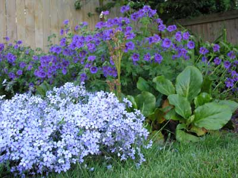

Meet the plants growing in my garden, an average-sized city lot in Redmond, WA. I collect epimediums, peonies and primroses, and many other perennials, try them out, and report on how they really do in an average landscape with average attention.
I live in the Pacific Northwest, USDA zone 7 (for me), with moist, cool, extended springs, dry summers and very wet winters. My garden isn’t big or grand, but it is packed with many things I love and grow.
My love of primroses is nearly as old as my love of gardening. One of the earliest gardening books I read was Margorie Fish's We Made A Garden. She was a renowned collector of primroses and had many in her garden in East Lambrook, England. Many of those she grew and loved may no longer exist.
What is so fascinating about these plants? Their flowers are rather small and they certainly aren't very flashy! Maybe it is because they bloom just when I am heartily sick of winter, or that they are very easy keepers. I suspect the main reason is the rarity of some of the varieties, which challenges me to hunt them down! Warning! Epimedium collecting is very addicting!
While I grow a few hybrid peonies, my passion is for the peony species that are so hard to obtain, and to properly identify. Here you'll find a showcase of peonies, both hybrids and species, growing in my garden.
| Name | Bloom time |
|---|---|
| Athena | Late April |
| Ann Cousins | Late June |
| Buckeye Belle | Early May |
| Elsa Sass | Mid May |
| Shirley Temple | Mid May |